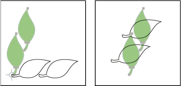

Rotate objects
Rotating an object turns it around a fixed point that you designate. The default reference point is the object’s center point. If you have multiple objects in a selection, the objects will rotate around a single reference point, which is the center point of the selection or bounding box by default. To rotate each object around its own center point, use the Transform Each command.

 Rotate an object using the bounding box
Rotate an object using the bounding box
- Select one or more objects.
- With the Selection tool
 , move
the pointer outside the bounding box and near a bounding box handle
so that the pointer changes to , and
then drag.
, move
the pointer outside the bounding box and near a bounding box handle
so that the pointer changes to , and
then drag.
Rotate an object with the Free Transform tool
- Select one or more objects.
- Select the Free Transform tool
 .
. - Position the pointer anywhere outside the bounding box so that the pointer changes to , and then drag.
Rotate an object with the Rotate tool
- Select one or more objects.
- Select the Rotate tool .
- Do any of the following:
-
To rotate the object around its center point, drag in a circular motion anywhere in the document window.
-
To rotate the object around a different reference point, click once anywhere in the document window to reposition the reference point. Then move the pointer away from the reference point and drag in a circular motion.
-
To rotate a copy of the object instead of the object itself, hold down Alt (Windows) or Option (Mac OS) after you start to drag.
-
For finer control, drag farther from the object’s reference point.
Rotate an object by a specific angle
You can control the exact angle of rotation with the Rotate command.
- Click OK, or click Copy to scale a copy of the
objects.
 To place multiple copies of the object
in a circular pattern around a reference point, move the reference
point away from the center of the object, click Copy, and then repeatedly
choose Object > Transform > Transform Again.
To place multiple copies of the object
in a circular pattern around a reference point, move the reference
point away from the center of the object, click Copy, and then repeatedly
choose Object > Transform > Transform Again.
Rotate an object with the Transform panel
- Select one or more objects.
- Do one of the following:
-
To rotate the object around its center point, enter a value for the Angle option in the panel.
-
To rotate the object around a different reference point, click a white square on the reference point locator
 in
the panel, and enter a value for the Angle option.You
can also call up the Transform panel by clicking X, Y, W, or H in
the Control panel.
in
the panel, and enter a value for the Angle option.You
can also call up the Transform panel by clicking X, Y, W, or H in
the Control panel.
-
Rotate multiple objects individually
- Select the objects to rotate.
- Choose Object > Transform > Transform Each.
- Do either of the following in the Rotate section of the
dialog box:
-
Click on the angle icon or drag the angle line around the icon.
-
In the Angle text box, enter an angle between –360° and 360°.
-
- Click OK, or click Copy to rotate a copy of each object.